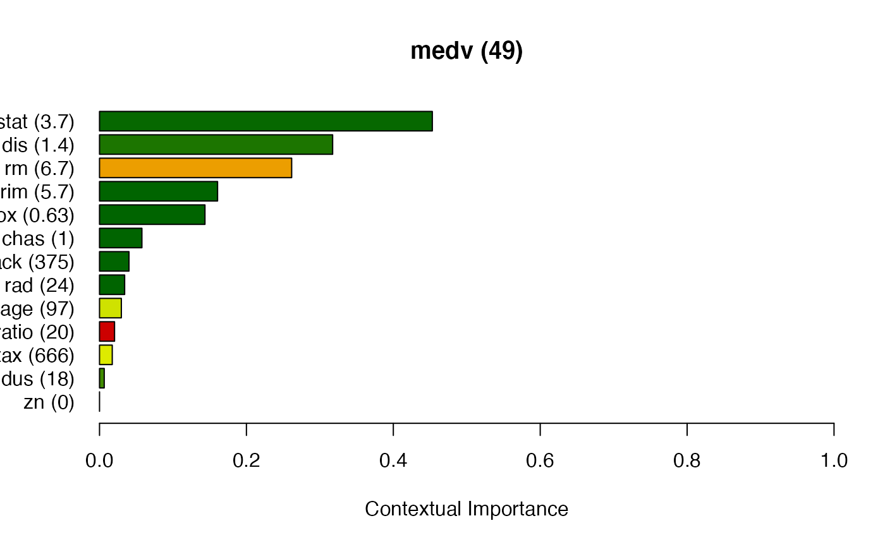

ciu.meta.explain
ciu.meta.explain.Rdciu.meta.explain
ciu.meta.explain( ciu, instance, ind.inputs = NULL, in.min.max.limits = NULL, n.samples = 100, concepts.to.explain = NULL, target.concept = NULL, target.ciu = NULL )
Arguments
| ciu |
|
|---|---|
| instance | Input values for the instance to explain. Should be a
data.frame even though a |
| ind.inputs | Indices of input features to explain (the set i in CIU formulae) |
| in.min.max.limits | data.frame or matrix with one row per output and two columns, where the first column indicates the minimal value and the second column the maximal value for that output. ONLY NEEDED HERE IF not given as parameter to ciu.new or if the limits are different for this specific instance than the default ones. |
| n.samples | How many instances to generate for estimating CI and CU. For inputs of type factor, all possible combinations of input values are generated, so this parameter only influences how many instances are (at least) generated for continuous-valued inputs. |
| concepts.to.explain | List of input feature concepts to explain, as defined
by vocabulary provided as argument to ciu.new. If |
| target.concept | If provided, then calculate CIU of inputs
|
| target.ciu |
|
Value
An object of class ciu.meta.result.
Author
Kary Främling
Examples
# Explaining the classification of an Iris instance with lda model. # We use a versicolor (instance 100). library(MASS) test.ind <- 100 iris_test <- iris[test.ind, 1:4] iris_train <- iris[-test.ind, 1:4] iris_lab <- iris[[5]][-test.ind] model <- lda(iris_train, iris_lab) # Create CIU object ciu <- ciu.new(model, Species~., iris) # Get ciu.meta.result. This can either be 'ciu$meta.explain(...)' # or 'ciu.meta.explain(ciu, ...)' ciu.meta <- ciu$meta.explain(iris_test) # Use same result for different visualisations. ciu$ggplot.col.ciu(ciu.meta = ciu.meta)ciu$barplot.ciu(ind.output = 2, ciu.meta = ciu.meta)ciu$pie.ciu(ind.output = 2, ciu.meta = ciu.meta)#>#>#> Iter TrainDeviance ValidDeviance StepSize Improve #> 1 76.8393 nan 0.1000 7.0766 #> 2 69.8548 nan 0.1000 5.1208 #> 3 63.7536 nan 0.1000 4.7890 #> 4 58.9739 nan 0.1000 5.2533 #> 5 54.5910 nan 0.1000 3.3549 #> 6 51.0143 nan 0.1000 2.8525 #> 7 47.7536 nan 0.1000 2.6780 #> 8 44.7686 nan 0.1000 3.0319 #> 9 42.0625 nan 0.1000 2.4232 #> 10 39.7559 nan 0.1000 1.9997 #> 20 25.3752 nan 0.1000 1.0095 #> 40 17.0426 nan 0.1000 0.0053 #> 60 14.1433 nan 0.1000 0.0315 #> 80 12.6209 nan 0.1000 -0.0003 #> 100 11.7030 nan 0.1000 0.0170 #> 120 11.2114 nan 0.1000 0.0078 #> 140 10.7235 nan 0.1000 -0.0596 #> 150 10.5468 nan 0.1000 -0.0163 #> #> Iter TrainDeviance ValidDeviance StepSize Improve #> 1 73.1386 nan 0.1000 8.3305 #> 2 64.7997 nan 0.1000 8.1670 #> 3 57.6875 nan 0.1000 6.7130 #> 4 51.6500 nan 0.1000 5.0864 #> 5 46.8250 nan 0.1000 4.6591 #> 6 42.2340 nan 0.1000 4.5157 #> 7 39.2796 nan 0.1000 3.1467 #> 8 36.0726 nan 0.1000 2.8762 #> 9 33.3275 nan 0.1000 2.5687 #> 10 30.7583 nan 0.1000 2.2706 #> 20 19.2148 nan 0.1000 0.3560 #> 40 12.9433 nan 0.1000 -0.0090 #> 60 10.1612 nan 0.1000 0.0130 #> 80 9.0072 nan 0.1000 -0.0064 #> 100 8.2486 nan 0.1000 -0.0652 #> 120 7.6041 nan 0.1000 -0.0303 #> 140 7.0460 nan 0.1000 -0.0270 #> 150 6.7867 nan 0.1000 -0.0293 #> #> Iter TrainDeviance ValidDeviance StepSize Improve #> 1 73.7907 nan 0.1000 7.9246 #> 2 64.3486 nan 0.1000 9.3937 #> 3 56.2494 nan 0.1000 7.9765 #> 4 49.9383 nan 0.1000 5.2661 #> 5 44.8241 nan 0.1000 5.4272 #> 6 40.4133 nan 0.1000 4.4197 #> 7 36.7743 nan 0.1000 3.5854 #> 8 33.6017 nan 0.1000 3.4100 #> 9 31.0872 nan 0.1000 2.6383 #> 10 28.9143 nan 0.1000 2.3294 #> 20 16.1498 nan 0.1000 0.4377 #> 40 10.2774 nan 0.1000 -0.0281 #> 60 8.2256 nan 0.1000 -0.0091 #> 80 6.9196 nan 0.1000 -0.0436 #> 100 6.1275 nan 0.1000 0.0042 #> 120 5.5503 nan 0.1000 -0.0456 #> 140 5.0437 nan 0.1000 0.0017 #> 150 4.7805 nan 0.1000 -0.0582 #> #> Iter TrainDeviance ValidDeviance StepSize Improve #> 1 76.8237 nan 0.1000 6.5219 #> 2 70.2902 nan 0.1000 6.3798 #> 3 64.8030 nan 0.1000 5.2175 #> 4 60.1561 nan 0.1000 4.2299 #> 5 56.1522 nan 0.1000 2.9448 #> 6 52.3124 nan 0.1000 3.7414 #> 7 48.5172 nan 0.1000 3.2966 #> 8 45.4009 nan 0.1000 2.6519 #> 9 42.5485 nan 0.1000 2.7023 #> 10 40.1527 nan 0.1000 1.9897 #> 20 25.6006 nan 0.1000 0.9340 #> 40 16.7596 nan 0.1000 0.0757 #> 60 13.9301 nan 0.1000 -0.0825 #> 80 12.8393 nan 0.1000 -0.1178 #> 100 11.8018 nan 0.1000 -0.0331 #> 120 11.3396 nan 0.1000 -0.1527 #> 140 10.7913 nan 0.1000 -0.0470 #> 150 10.5979 nan 0.1000 -0.0421 #> #> Iter TrainDeviance ValidDeviance StepSize Improve #> 1 73.9782 nan 0.1000 10.7893 #> 2 65.8826 nan 0.1000 8.4171 #> 3 58.4100 nan 0.1000 6.4783 #> 4 52.4444 nan 0.1000 5.7717 #> 5 47.5905 nan 0.1000 4.3390 #> 6 43.2578 nan 0.1000 3.8914 #> 7 39.7073 nan 0.1000 3.2077 #> 8 35.8965 nan 0.1000 3.8103 #> 9 33.1584 nan 0.1000 2.4341 #> 10 30.8372 nan 0.1000 2.0577 #> 20 18.7246 nan 0.1000 0.5484 #> 40 11.7655 nan 0.1000 -0.0454 #> 60 9.7194 nan 0.1000 0.0088 #> 80 8.6887 nan 0.1000 -0.0368 #> 100 8.0874 nan 0.1000 -0.1190 #> 120 7.5009 nan 0.1000 -0.0013 #> 140 7.0064 nan 0.1000 -0.0003 #> 150 6.7586 nan 0.1000 -0.1238 #> #> Iter TrainDeviance ValidDeviance StepSize Improve #> 1 73.1125 nan 0.1000 12.9738 #> 2 63.6395 nan 0.1000 7.8246 #> 3 56.1347 nan 0.1000 7.4690 #> 4 49.7748 nan 0.1000 6.6543 #> 5 44.7069 nan 0.1000 4.3795 #> 6 40.2093 nan 0.1000 4.6623 #> 7 35.7550 nan 0.1000 3.9912 #> 8 32.4048 nan 0.1000 2.4747 #> 9 29.4776 nan 0.1000 2.0685 #> 10 27.2494 nan 0.1000 2.0177 #> 20 15.2165 nan 0.1000 0.2618 #> 40 9.1277 nan 0.1000 0.0497 #> 60 7.1994 nan 0.1000 -0.0016 #> 80 6.3212 nan 0.1000 -0.0579 #> 100 5.4629 nan 0.1000 -0.0622 #> 120 4.8410 nan 0.1000 -0.0100 #> 140 4.3335 nan 0.1000 -0.0354 #> 150 4.1664 nan 0.1000 -0.0333 #> #> Iter TrainDeviance ValidDeviance StepSize Improve #> 1 78.4911 nan 0.1000 5.0052 #> 2 70.8990 nan 0.1000 6.8338 #> 3 64.9830 nan 0.1000 5.5170 #> 4 60.1963 nan 0.1000 4.6847 #> 5 55.0109 nan 0.1000 5.1888 #> 6 50.9343 nan 0.1000 4.2438 #> 7 47.6674 nan 0.1000 3.0821 #> 8 44.6271 nan 0.1000 3.2754 #> 9 41.8751 nan 0.1000 2.3449 #> 10 39.3252 nan 0.1000 1.9419 #> 20 23.8484 nan 0.1000 0.7037 #> 40 15.0964 nan 0.1000 0.1628 #> 60 12.4293 nan 0.1000 0.0627 #> 80 11.2531 nan 0.1000 -0.0050 #> 100 10.5536 nan 0.1000 0.0211 #> 120 10.0477 nan 0.1000 -0.0479 #> 140 9.5858 nan 0.1000 -0.0397 #> 150 9.4220 nan 0.1000 -0.1163 #> #> Iter TrainDeviance ValidDeviance StepSize Improve #> 1 75.8034 nan 0.1000 9.8088 #> 2 67.0319 nan 0.1000 8.7993 #> 3 59.2302 nan 0.1000 6.8336 #> 4 52.1703 nan 0.1000 7.6374 #> 5 46.5542 nan 0.1000 5.6465 #> 6 42.1715 nan 0.1000 4.5707 #> 7 38.5114 nan 0.1000 3.5709 #> 8 35.2094 nan 0.1000 3.2301 #> 9 32.0762 nan 0.1000 2.9261 #> 10 29.5236 nan 0.1000 2.8412 #> 20 15.9535 nan 0.1000 0.7028 #> 40 10.3702 nan 0.1000 0.0645 #> 60 8.3540 nan 0.1000 -0.0058 #> 80 7.2912 nan 0.1000 0.0265 #> 100 6.5844 nan 0.1000 -0.0371 #> 120 6.0553 nan 0.1000 -0.0145 #> 140 5.6069 nan 0.1000 -0.0111 #> 150 5.3949 nan 0.1000 0.0156 #> #> Iter TrainDeviance ValidDeviance StepSize Improve #> 1 73.9551 nan 0.1000 10.3473 #> 2 64.5278 nan 0.1000 8.9053 #> 3 56.5672 nan 0.1000 7.9601 #> 4 49.9775 nan 0.1000 6.9861 #> 5 44.3970 nan 0.1000 5.4557 #> 6 39.3352 nan 0.1000 3.8895 #> 7 35.2096 nan 0.1000 3.4472 #> 8 31.4255 nan 0.1000 3.9678 #> 9 28.5167 nan 0.1000 2.6859 #> 10 26.1667 nan 0.1000 2.1485 #> 20 13.8253 nan 0.1000 0.4315 #> 40 8.9683 nan 0.1000 0.0074 #> 60 7.2854 nan 0.1000 -0.0210 #> 80 6.2466 nan 0.1000 -0.0629 #> 100 5.4465 nan 0.1000 -0.0388 #> 120 4.8549 nan 0.1000 -0.0315 #> 140 4.3595 nan 0.1000 -0.0156 #> 150 4.2052 nan 0.1000 -0.0210 #> #> Iter TrainDeviance ValidDeviance StepSize Improve #> 1 75.1382 nan 0.1000 6.9095 #> 2 69.1462 nan 0.1000 4.9279 #> 3 63.7173 nan 0.1000 5.0843 #> 4 58.7026 nan 0.1000 4.2980 #> 5 55.2890 nan 0.1000 3.3985 #> 6 51.9143 nan 0.1000 3.6145 #> 7 48.7470 nan 0.1000 3.2348 #> 8 45.5058 nan 0.1000 3.2436 #> 9 42.7857 nan 0.1000 2.6297 #> 10 40.2997 nan 0.1000 2.2410 #> 20 25.2525 nan 0.1000 0.6106 #> 40 16.4918 nan 0.1000 -0.0331 #> 60 13.5157 nan 0.1000 0.0764 #> 80 12.2968 nan 0.1000 -0.1397 #> 100 11.5846 nan 0.1000 -0.0466 #> 120 11.0221 nan 0.1000 -0.0035 #> 140 10.6148 nan 0.1000 0.0093 #> 150 10.4237 nan 0.1000 -0.0499 #> #> Iter TrainDeviance ValidDeviance StepSize Improve #> 1 72.7051 nan 0.1000 10.2005 #> 2 65.3186 nan 0.1000 7.3714 #> 3 58.1175 nan 0.1000 6.5557 #> 4 51.7621 nan 0.1000 6.5138 #> 5 46.8891 nan 0.1000 5.2178 #> 6 42.5270 nan 0.1000 4.0808 #> 7 38.6678 nan 0.1000 3.0323 #> 8 35.7548 nan 0.1000 2.8220 #> 9 33.1174 nan 0.1000 2.5574 #> 10 30.7495 nan 0.1000 2.3352 #> 20 18.7797 nan 0.1000 0.5202 #> 40 12.3514 nan 0.1000 0.0118 #> 60 10.1683 nan 0.1000 0.0130 #> 80 9.0214 nan 0.1000 -0.0397 #> 100 8.1714 nan 0.1000 0.0089 #> 120 7.6705 nan 0.1000 -0.0435 #> 140 7.1175 nan 0.1000 -0.0375 #> 150 6.8311 nan 0.1000 -0.0261 #> #> Iter TrainDeviance ValidDeviance StepSize Improve #> 1 71.6955 nan 0.1000 10.4856 #> 2 63.8785 nan 0.1000 7.5187 #> 3 56.4198 nan 0.1000 6.9600 #> 4 49.9978 nan 0.1000 5.5242 #> 5 44.0590 nan 0.1000 6.0363 #> 6 39.6399 nan 0.1000 3.7206 #> 7 36.1301 nan 0.1000 3.6349 #> 8 32.4120 nan 0.1000 3.2889 #> 9 29.5066 nan 0.1000 2.9825 #> 10 27.3315 nan 0.1000 2.0572 #> 20 15.1948 nan 0.1000 0.3683 #> 40 9.7872 nan 0.1000 0.0668 #> 60 7.7632 nan 0.1000 0.0194 #> 80 6.6178 nan 0.1000 -0.0093 #> 100 5.7300 nan 0.1000 -0.0504 #> 120 5.1571 nan 0.1000 -0.0480 #> 140 4.6124 nan 0.1000 -0.0152 #> 150 4.4338 nan 0.1000 -0.0468 #> #> Iter TrainDeviance ValidDeviance StepSize Improve #> 1 78.0425 nan 0.1000 7.2701 #> 2 71.3985 nan 0.1000 5.8153 #> 3 66.4740 nan 0.1000 4.8310 #> 4 60.9060 nan 0.1000 5.8710 #> 5 56.0784 nan 0.1000 4.2423 #> 6 51.9712 nan 0.1000 3.8991 #> 7 48.2959 nan 0.1000 3.4041 #> 8 45.3062 nan 0.1000 2.8752 #> 9 42.2977 nan 0.1000 2.5920 #> 10 39.6087 nan 0.1000 2.1865 #> 20 24.9786 nan 0.1000 0.6949 #> 40 16.3013 nan 0.1000 0.1426 #> 60 13.7563 nan 0.1000 0.0930 #> 80 12.1357 nan 0.1000 0.0092 #> 100 11.2078 nan 0.1000 0.0235 #> 120 10.6905 nan 0.1000 -0.0043 #> 140 10.2659 nan 0.1000 -0.1391 #> 150 10.0418 nan 0.1000 -0.0043 #> #> Iter TrainDeviance ValidDeviance StepSize Improve #> 1 76.4138 nan 0.1000 8.6814 #> 2 68.3808 nan 0.1000 8.0347 #> 3 60.7857 nan 0.1000 8.0862 #> 4 54.8333 nan 0.1000 6.0297 #> 5 48.8363 nan 0.1000 6.1000 #> 6 44.0967 nan 0.1000 4.2245 #> 7 40.0787 nan 0.1000 3.1841 #> 8 36.6128 nan 0.1000 3.3205 #> 9 33.6584 nan 0.1000 2.9234 #> 10 30.9314 nan 0.1000 2.1018 #> 20 18.0815 nan 0.1000 0.3558 #> 40 11.3121 nan 0.1000 0.0695 #> 60 9.4601 nan 0.1000 0.0092 #> 80 8.4815 nan 0.1000 -0.0234 #> 100 7.8429 nan 0.1000 -0.0533 #> 120 7.1587 nan 0.1000 -0.0928 #> 140 6.6465 nan 0.1000 -0.0180 #> 150 6.4215 nan 0.1000 -0.0146 #> #> Iter TrainDeviance ValidDeviance StepSize Improve #> 1 74.2937 nan 0.1000 9.1813 #> 2 65.4380 nan 0.1000 8.4332 #> 3 57.5477 nan 0.1000 6.9125 #> 4 50.8996 nan 0.1000 6.2030 #> 5 45.4247 nan 0.1000 5.4063 #> 6 40.8578 nan 0.1000 4.9531 #> 7 36.5452 nan 0.1000 3.3053 #> 8 32.8910 nan 0.1000 3.3471 #> 9 29.9625 nan 0.1000 2.7844 #> 10 27.5387 nan 0.1000 2.0075 #> 20 15.3304 nan 0.1000 0.3233 #> 40 9.7394 nan 0.1000 0.0429 #> 60 8.0100 nan 0.1000 -0.0483 #> 80 6.9277 nan 0.1000 0.0120 #> 100 6.2040 nan 0.1000 -0.0597 #> 120 5.6383 nan 0.1000 -0.0390 #> 140 5.0632 nan 0.1000 -0.0153 #> 150 4.7808 nan 0.1000 -0.0577 #> #> Iter TrainDeviance ValidDeviance StepSize Improve #> 1 79.0654 nan 0.1000 7.6230 #> 2 72.3821 nan 0.1000 5.4968 #> 3 66.7767 nan 0.1000 6.0657 #> 4 61.9266 nan 0.1000 4.9800 #> 5 57.4092 nan 0.1000 4.6220 #> 6 52.7894 nan 0.1000 3.3681 #> 7 48.9579 nan 0.1000 3.5352 #> 8 45.6577 nan 0.1000 3.0402 #> 9 43.2232 nan 0.1000 2.8440 #> 10 40.5448 nan 0.1000 2.4058 #> 20 25.5211 nan 0.1000 0.7853 #> 40 16.2681 nan 0.1000 0.2559 #> 60 13.5421 nan 0.1000 0.0256 #> 80 12.1113 nan 0.1000 0.0182 #> 100 11.2140 nan 0.1000 -0.0359 #> 120 10.7200 nan 0.1000 -0.0286 #> 140 10.1814 nan 0.1000 -0.0203 #> 150 10.0465 nan 0.1000 -0.0416 #> #> Iter TrainDeviance ValidDeviance StepSize Improve #> 1 76.0578 nan 0.1000 9.1119 #> 2 67.2276 nan 0.1000 9.4807 #> 3 59.6624 nan 0.1000 7.1399 #> 4 53.6498 nan 0.1000 5.5013 #> 5 48.6641 nan 0.1000 5.1334 #> 6 44.1860 nan 0.1000 4.2449 #> 7 40.1379 nan 0.1000 3.7906 #> 8 36.9085 nan 0.1000 2.3671 #> 9 33.9297 nan 0.1000 2.6097 #> 10 31.6345 nan 0.1000 1.8146 #> 20 18.0101 nan 0.1000 0.4355 #> 40 11.8755 nan 0.1000 0.0981 #> 60 9.8894 nan 0.1000 0.0076 #> 80 8.6694 nan 0.1000 -0.0529 #> 100 7.9536 nan 0.1000 -0.0577 #> 120 7.3872 nan 0.1000 -0.0349 #> 140 6.9583 nan 0.1000 -0.0703 #> 150 6.6847 nan 0.1000 -0.0583 #> #> Iter TrainDeviance ValidDeviance StepSize Improve #> 1 74.9569 nan 0.1000 9.6355 #> 2 65.5388 nan 0.1000 9.2741 #> 3 57.8612 nan 0.1000 8.2907 #> 4 51.5552 nan 0.1000 6.1440 #> 5 46.2032 nan 0.1000 5.4931 #> 6 41.4289 nan 0.1000 4.4872 #> 7 37.3223 nan 0.1000 4.4493 #> 8 33.7734 nan 0.1000 3.3016 #> 9 30.7853 nan 0.1000 2.2193 #> 10 28.2386 nan 0.1000 2.2691 #> 20 15.3757 nan 0.1000 0.3632 #> 40 9.4461 nan 0.1000 0.0153 #> 60 7.6810 nan 0.1000 0.0290 #> 80 6.7182 nan 0.1000 -0.0245 #> 100 5.9751 nan 0.1000 -0.0280 #> 120 5.3264 nan 0.1000 -0.0602 #> 140 4.8702 nan 0.1000 -0.0224 #> 150 4.7184 nan 0.1000 -0.0155 #> #> Iter TrainDeviance ValidDeviance StepSize Improve #> 1 74.3173 nan 0.1000 6.3972 #> 2 68.6040 nan 0.1000 4.8944 #> 3 63.4191 nan 0.1000 5.3618 #> 4 58.9292 nan 0.1000 4.3912 #> 5 54.5827 nan 0.1000 3.4153 #> 6 50.7852 nan 0.1000 3.9256 #> 7 47.2315 nan 0.1000 3.3424 #> 8 43.8817 nan 0.1000 3.2442 #> 9 41.1627 nan 0.1000 2.8778 #> 10 38.6895 nan 0.1000 2.0574 #> 20 24.2128 nan 0.1000 0.6070 #> 40 15.8282 nan 0.1000 -0.0442 #> 60 13.2767 nan 0.1000 0.0452 #> 80 12.2237 nan 0.1000 0.0071 #> 100 11.4293 nan 0.1000 0.0009 #> 120 11.0763 nan 0.1000 -0.0947 #> 140 10.5335 nan 0.1000 -0.0332 #> 150 10.3803 nan 0.1000 0.0110 #> #> Iter TrainDeviance ValidDeviance StepSize Improve #> 1 72.1199 nan 0.1000 10.3236 #> 2 64.3469 nan 0.1000 7.8190 #> 3 57.8968 nan 0.1000 6.0758 #> 4 50.9376 nan 0.1000 6.9912 #> 5 46.0998 nan 0.1000 4.7344 #> 6 42.3101 nan 0.1000 4.4689 #> 7 38.5547 nan 0.1000 3.2464 #> 8 34.9308 nan 0.1000 2.9417 #> 9 32.4238 nan 0.1000 2.5619 #> 10 30.1088 nan 0.1000 2.0326 #> 20 17.9159 nan 0.1000 0.2372 #> 40 11.8051 nan 0.1000 -0.0472 #> 60 9.8609 nan 0.1000 -0.0863 #> 80 8.8533 nan 0.1000 0.0180 #> 100 7.9560 nan 0.1000 -0.0366 #> 120 7.3027 nan 0.1000 -0.0554 #> 140 6.8399 nan 0.1000 -0.0545 #> 150 6.6205 nan 0.1000 -0.0534 #> #> Iter TrainDeviance ValidDeviance StepSize Improve #> 1 71.5801 nan 0.1000 10.3562 #> 2 62.9702 nan 0.1000 9.9596 #> 3 55.5403 nan 0.1000 6.7051 #> 4 49.7714 nan 0.1000 6.0907 #> 5 44.1813 nan 0.1000 4.6305 #> 6 39.1259 nan 0.1000 4.0852 #> 7 35.2929 nan 0.1000 3.6408 #> 8 31.7241 nan 0.1000 3.0961 #> 9 28.8176 nan 0.1000 2.3959 #> 10 27.0130 nan 0.1000 1.8754 #> 20 15.2468 nan 0.1000 0.3178 #> 40 9.9366 nan 0.1000 -0.0851 #> 60 7.9978 nan 0.1000 0.0447 #> 80 6.7506 nan 0.1000 -0.0776 #> 100 5.9029 nan 0.1000 0.0378 #> 120 5.1838 nan 0.1000 -0.0220 #> 140 4.7526 nan 0.1000 -0.0266 #> 150 4.5080 nan 0.1000 -0.0391 #> #> Iter TrainDeviance ValidDeviance StepSize Improve #> 1 78.3475 nan 0.1000 7.3042 #> 2 72.2989 nan 0.1000 6.4436 #> 3 66.2211 nan 0.1000 4.7618 #> 4 61.4694 nan 0.1000 5.0233 #> 5 57.2385 nan 0.1000 3.3321 #> 6 53.3826 nan 0.1000 3.4814 #> 7 49.5256 nan 0.1000 3.5057 #> 8 46.4537 nan 0.1000 2.7788 #> 9 43.3449 nan 0.1000 2.4757 #> 10 40.4273 nan 0.1000 2.6983 #> 20 24.7171 nan 0.1000 0.8933 #> 40 16.0735 nan 0.1000 0.0408 #> 60 13.4725 nan 0.1000 0.0382 #> 80 12.2202 nan 0.1000 -0.0628 #> 100 11.4806 nan 0.1000 -0.0690 #> 120 10.9853 nan 0.1000 -0.0546 #> 140 10.5712 nan 0.1000 -0.0087 #> 150 10.3834 nan 0.1000 -0.0230 #> #> Iter TrainDeviance ValidDeviance StepSize Improve #> 1 76.0476 nan 0.1000 8.6737 #> 2 67.2738 nan 0.1000 8.5932 #> 3 58.9580 nan 0.1000 7.5950 #> 4 52.6162 nan 0.1000 5.0719 #> 5 48.0959 nan 0.1000 4.4669 #> 6 43.6756 nan 0.1000 4.2763 #> 7 39.0791 nan 0.1000 3.8686 #> 8 35.8751 nan 0.1000 2.7937 #> 9 32.9997 nan 0.1000 2.2629 #> 10 30.3996 nan 0.1000 2.3992 #> 20 17.6740 nan 0.1000 0.5674 #> 40 11.9654 nan 0.1000 0.0293 #> 60 10.1430 nan 0.1000 -0.0651 #> 80 9.1571 nan 0.1000 0.0130 #> 100 8.4197 nan 0.1000 -0.0972 #> 120 7.7519 nan 0.1000 -0.0344 #> 140 7.0621 nan 0.1000 -0.0393 #> 150 6.7492 nan 0.1000 -0.0743 #> #> Iter TrainDeviance ValidDeviance StepSize Improve #> 1 74.3675 nan 0.1000 8.8299 #> 2 65.0097 nan 0.1000 7.5975 #> 3 56.8271 nan 0.1000 7.1460 #> 4 50.7366 nan 0.1000 5.6539 #> 5 45.2781 nan 0.1000 4.6259 #> 6 40.6340 nan 0.1000 4.5218 #> 7 36.5706 nan 0.1000 3.7148 #> 8 33.4496 nan 0.1000 2.5439 #> 9 30.0583 nan 0.1000 2.7426 #> 10 27.5358 nan 0.1000 2.0511 #> 20 15.4182 nan 0.1000 0.4518 #> 40 10.0192 nan 0.1000 0.0107 #> 60 8.3029 nan 0.1000 -0.0171 #> 80 6.7072 nan 0.1000 -0.0182 #> 100 5.8244 nan 0.1000 -0.0474 #> 120 5.1690 nan 0.1000 -0.0771 #> 140 4.6290 nan 0.1000 -0.0097 #> 150 4.4304 nan 0.1000 -0.0675 #> #> Iter TrainDeviance ValidDeviance StepSize Improve #> 1 75.8600 nan 0.1000 7.4332 #> 2 69.9434 nan 0.1000 4.6766 #> 3 63.9014 nan 0.1000 5.7690 #> 4 59.2613 nan 0.1000 4.3051 #> 5 55.4274 nan 0.1000 4.2355 #> 6 50.8650 nan 0.1000 4.4797 #> 7 46.7795 nan 0.1000 3.4010 #> 8 43.9232 nan 0.1000 2.7996 #> 9 41.0267 nan 0.1000 2.6872 #> 10 38.1014 nan 0.1000 2.0510 #> 20 23.2656 nan 0.1000 0.8543 #> 40 14.5077 nan 0.1000 0.1027 #> 60 12.3004 nan 0.1000 0.0560 #> 80 11.2014 nan 0.1000 -0.0643 #> 100 10.5145 nan 0.1000 -0.0631 #> 120 9.9763 nan 0.1000 -0.0233 #> 140 9.4374 nan 0.1000 0.0217 #> 150 9.2531 nan 0.1000 -0.0291 #> #> Iter TrainDeviance ValidDeviance StepSize Improve #> 1 73.6691 nan 0.1000 10.5476 #> 2 64.7697 nan 0.1000 6.6839 #> 3 57.1093 nan 0.1000 7.1312 #> 4 51.3828 nan 0.1000 4.3056 #> 5 45.8735 nan 0.1000 6.0271 #> 6 41.1268 nan 0.1000 3.6836 #> 7 37.0872 nan 0.1000 3.3477 #> 8 33.6219 nan 0.1000 2.7795 #> 9 30.5782 nan 0.1000 2.9971 #> 10 28.3401 nan 0.1000 2.4649 #> 20 15.9360 nan 0.1000 0.6379 #> 40 10.4666 nan 0.1000 0.0413 #> 60 8.6958 nan 0.1000 -0.0496 #> 80 7.7593 nan 0.1000 -0.1251 #> 100 7.0335 nan 0.1000 -0.0284 #> 120 6.4792 nan 0.1000 0.0084 #> 140 6.0599 nan 0.1000 -0.0271 #> 150 5.9103 nan 0.1000 -0.0298 #> #> Iter TrainDeviance ValidDeviance StepSize Improve #> 1 73.2451 nan 0.1000 11.3168 #> 2 63.5614 nan 0.1000 9.5359 #> 3 55.2457 nan 0.1000 7.7496 #> 4 48.6766 nan 0.1000 7.0776 #> 5 42.8375 nan 0.1000 5.2018 #> 6 38.2275 nan 0.1000 3.1824 #> 7 34.0612 nan 0.1000 4.0745 #> 8 30.5528 nan 0.1000 3.2922 #> 9 27.6956 nan 0.1000 2.1110 #> 10 25.2646 nan 0.1000 2.2364 #> 20 13.5450 nan 0.1000 0.3832 #> 40 9.0030 nan 0.1000 0.0093 #> 60 7.4236 nan 0.1000 -0.0316 #> 80 6.3476 nan 0.1000 -0.0297 #> 100 5.5654 nan 0.1000 -0.0370 #> 120 4.9722 nan 0.1000 -0.0238 #> 140 4.6103 nan 0.1000 -0.0075 #> 150 4.3921 nan 0.1000 -0.0161 #> #> Iter TrainDeviance ValidDeviance StepSize Improve #> 1 78.6195 nan 0.1000 5.9929 #> 2 71.9577 nan 0.1000 6.4256 #> 3 66.4447 nan 0.1000 4.9313 #> 4 61.1601 nan 0.1000 5.2953 #> 5 56.5173 nan 0.1000 4.7864 #> 6 52.1252 nan 0.1000 3.9269 #> 7 49.1637 nan 0.1000 3.1205 #> 8 46.4082 nan 0.1000 2.5430 #> 9 43.2287 nan 0.1000 2.5891 #> 10 40.6824 nan 0.1000 2.3715 #> 20 25.5171 nan 0.1000 0.8909 #> 40 16.8692 nan 0.1000 0.0802 #> 60 13.9459 nan 0.1000 0.1082 #> 80 12.2290 nan 0.1000 0.0076 #> 100 11.3063 nan 0.1000 -0.0122 #> 120 10.7400 nan 0.1000 0.0043 #> 140 10.3036 nan 0.1000 -0.0211 #> 150 10.0532 nan 0.1000 -0.0394 #> #> Iter TrainDeviance ValidDeviance StepSize Improve #> 1 75.2155 nan 0.1000 8.8562 #> 2 66.5593 nan 0.1000 8.0175 #> 3 59.6969 nan 0.1000 6.0046 #> 4 53.7645 nan 0.1000 5.9101 #> 5 48.8665 nan 0.1000 4.0046 #> 6 44.1550 nan 0.1000 4.1884 #> 7 40.1920 nan 0.1000 3.9005 #> 8 36.8707 nan 0.1000 3.0490 #> 9 33.5267 nan 0.1000 3.0712 #> 10 31.2580 nan 0.1000 2.1764 #> 20 17.7592 nan 0.1000 0.4601 #> 40 11.5955 nan 0.1000 -0.0422 #> 60 9.3153 nan 0.1000 0.0105 #> 80 8.3144 nan 0.1000 -0.0494 #> 100 7.4823 nan 0.1000 0.0062 #> 120 6.8597 nan 0.1000 -0.0604 #> 140 6.3666 nan 0.1000 -0.0511 #> 150 6.1115 nan 0.1000 -0.0109 #> #> Iter TrainDeviance ValidDeviance StepSize Improve #> 1 73.3429 nan 0.1000 12.9890 #> 2 63.7725 nan 0.1000 9.3020 #> 3 56.4624 nan 0.1000 7.4784 #> 4 50.6610 nan 0.1000 6.7299 #> 5 45.1297 nan 0.1000 5.0485 #> 6 40.4356 nan 0.1000 3.7954 #> 7 36.4200 nan 0.1000 4.0093 #> 8 33.1960 nan 0.1000 2.9351 #> 9 29.7093 nan 0.1000 2.3190 #> 10 27.3787 nan 0.1000 2.4163 #> 20 15.4220 nan 0.1000 0.3775 #> 40 10.1355 nan 0.1000 -0.0638 #> 60 8.1769 nan 0.1000 -0.0621 #> 80 6.9806 nan 0.1000 -0.0310 #> 100 6.1060 nan 0.1000 -0.0958 #> 120 5.5318 nan 0.1000 -0.0646 #> 140 4.9022 nan 0.1000 -0.0044 #> 150 4.6960 nan 0.1000 -0.0456 #> #> Iter TrainDeviance ValidDeviance StepSize Improve #> 1 74.0587 nan 0.1000 10.2230 #> 2 64.4883 nan 0.1000 8.2758 #> 3 56.6311 nan 0.1000 6.9126 #> 4 50.0628 nan 0.1000 6.2995 #> 5 44.6181 nan 0.1000 6.1000 #> 6 39.8172 nan 0.1000 5.0383 #> 7 35.3779 nan 0.1000 3.4450 #> 8 32.0951 nan 0.1000 3.0099 #> 9 29.7132 nan 0.1000 2.1972 #> 10 27.7750 nan 0.1000 1.7038 #> 20 14.9563 nan 0.1000 0.7118 #> 40 9.1231 nan 0.1000 0.0134 #> 60 7.5107 nan 0.1000 -0.0109 #> 80 6.4981 nan 0.1000 -0.0342 #> 100 5.8748 nan 0.1000 -0.0528 #> 120 5.2837 nan 0.1000 -0.0561 #> 140 4.7720 nan 0.1000 -0.0140 #> 150 4.6276 nan 0.1000 -0.0168 #>ciu <- ciu.new(gbm, medv~., Boston) instance <- Boston[370,1:13] ciu.meta <- ciu$meta.explain(instance) ciu$barplot.ciu(ciu.meta = ciu.meta, sort = "CI")ciu$pie.ciu(ciu.meta = ciu.meta)ciu$ggplot.col.ciu(ciu.meta = ciu.meta)